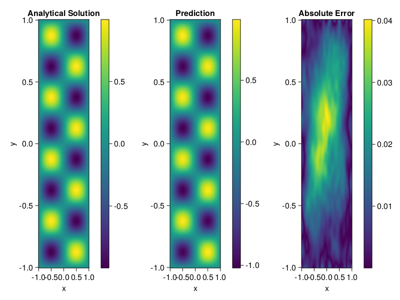

Helmholtz equation
Let us consider the Helmholtz equation in two space dimensions
\[\begin{aligned} &\Delta u(x, y)+k^{2} u(x, y)=q(x, y), \quad(x, y) \in \Omega:=(-1,1) \\ &u(x, y)=h(x, y), \quad(x, y) \in \partial \Omega \end{aligned}\]
where
\[q(x, y)=-\left(a_{1} \pi\right)^{2} \sin \left(a_{1} \pi x\right) \sin \left(a_{2} \pi y\right)-\left(a_{2} \pi\right)^{2} \sin \left(a_{1} \pi x\right) \sin \left(a_{2} \pi y\right)+k^{2} \sin \left(a_{1} \pi x\right) \sin \left(a_{2} \pi y\right).\]
The excat solution is $u(x,y)=\sin{a_1\pi x}\sin{a_2\pi y}$. We chose $k=1, a_1 = 1$ and $a_2 = 4$.
using NeuralPDE, IntervalSets, Sophon, Lux, Random
using Optimization, OptimizationOptimisers
@parameters x,y
@variables u(..)
Dxx = Differential(x)^2
Dyy = Differential(y)^2
a1 = 1
a2 = 4
k = 1
q(x,y) = -(a1*π)^2 * sin(a1*π*x) * sin(a2*π*y) - (a2*π)^2 * sin(a1*π*x) * sin(a2*π*y) + k^2 * sin(a1*π*x) * sin(a2*π*y)
eq = Dxx(u(x,y)) + Dyy(u(x,y)) + k^2 * u(x,y) ~ q(x,y)
domains = [x ∈ Interval(-1,1), y ∈ Interval(-1,1)]
bcs = [u(-1,y) ~ 0, u(1,y) ~ 0, u(x, -1) ~ 0, u(x, 1) ~ 0]
@named helmholtz = PDESystem(eq, bcs, domains, [x,y], [u(x,y)])
chain = Siren(2, 1; num_layers = 4, hidden_dims = 50, omega = 10f0)
ps= Lux.initialparameters(Random.default_rng(), chain) |> GPUComponentArray64
adaptive_loss = NonAdaptiveLoss(; bc_loss_weights = [1000,1000,1000,1000])
discretization = PhysicsInformedNN(chain, QuasiRandomTraining(200); init_params = ps, adaptive_loss = adaptive_loss)
prob = discretize(helmholtz, discretization)
phi = discretization.phi
@time res = Optimization.solve(prob, Adam(); maxiters=2000)u: ComponentVector{Float64}(layer_1 = (weight = [-1.0011499533413504 0.017451960982688065; -4.757040421753476 4.738382621226181; … ; -3.4125030672666172 -4.316952339093456; 0.38490691286026624 -4.8363042663314], bias = [0.043527842574342966; 0.053234474167270014; … ; -0.14815835720876552; -0.09607531724568012;;]), layer_2 = (weight = [-0.19983301976423076 -0.06441461258956044 … 0.1678223261786524 0.017256741330384146; -0.2778640409787468 -0.10832101066928261 … -0.12329779404872811 0.08027723713644837; … ; -0.09492404062981191 0.10211998613654037 … 0.2692308345130656 0.04015801968251838; 0.10869540298523203 -0.04159991779585774 … -0.05170728561561319 0.36864972706007904], bias = [0.14073643301995223; 0.07172568219044635; … ; -0.11028599833682441; 0.12416642338972678;;]), layer_3 = (weight = [-0.258850555190501 -0.23110117728390484 … -0.02777557964306617 0.16523485643269917; 0.18261935471707805 0.33119602520760244 … 0.07240539499793637 -0.3051095526771849; … ; 0.2396680855416544 -0.13179638229280682 … -0.2078974045199772 0.22355917197517594; -0.050576794548991715 0.1276561691587295 … 0.07318930891683267 0.20774095464702563], bias = [-0.13697260784920987; -0.10447694489074817; … ; 0.07534135469783537; 0.083237525876996;;]), layer_4 = (weight = [-0.20362236489455868 -0.3626580796849297 … 0.29949019926423326 0.10297798474760829; -0.2845986051207196 -0.19984485060063198 … 0.06371777087405052 0.24672447235417105; … ; -0.26374418469150457 0.16152893653516662 … -0.03477754934420589 0.3249083202259353; -0.1222076183642398 0.1994136127291812 … 0.3157424246340243 -0.31127630972654025], bias = [0.09695490803157156; 0.05140492706233036; … ; 0.016671303004853054; -0.11251349945626593;;]), layer_5 = (weight = [-0.31301125141790187 0.07974760019700783 … 0.018182531578696072 0.03127546504114131], bias = [0.0990448924764822;;]))Let's plot the result.
xs, ys= [infimum(d.domain):0.01:supremum(d.domain) for d in domains]
u_analytic(x,y) = sin(a1*pi*x)*sin(a2*pi*y)
u_real = [u_analytic(x,y) for x in xs, y in ys]
u_pred = [sum(phi([x,y], res.u)) for x in xs, y in ys]
using CairoMakie
axis = (xlabel="x", ylabel="y", title="Analytical Solution")
fig, ax1, hm1 = heatmap(xs, ys, u_real, axis=axis)
Colorbar(fig[:, end+1], hm1)
ax2, hm2= heatmap(fig[1, end+1], xs, ys, u_pred, axis= merge(axis, (;title = "Prediction")))
Colorbar(fig[:, end+1], hm2)
ax3, hm3 = heatmap(fig[1, end+1], xs, ys, abs.(u_pred-u_real), axis= merge(axis, (;title = "Absolute Error")))
Colorbar(fig[:, end+1], hm3)